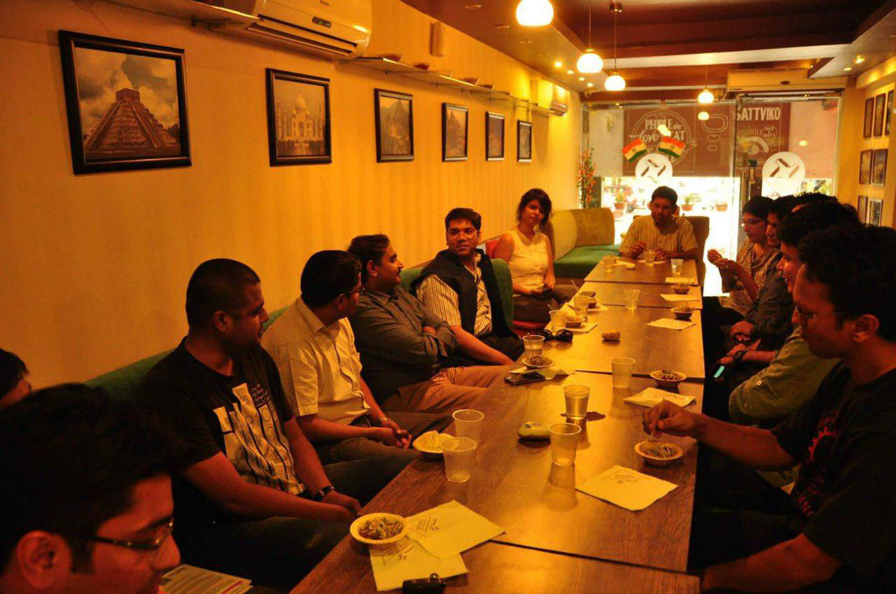
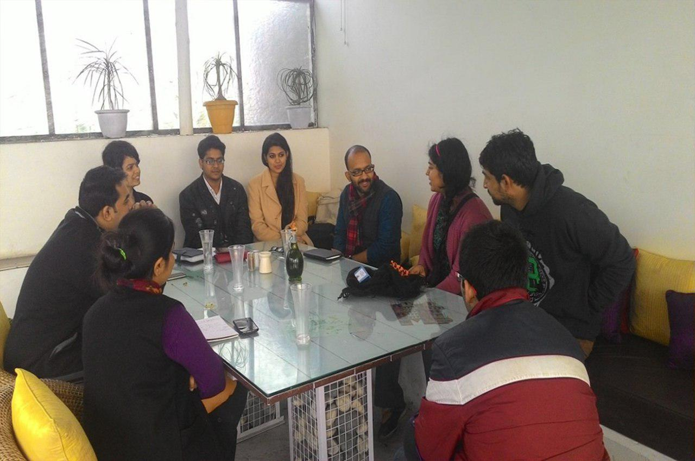
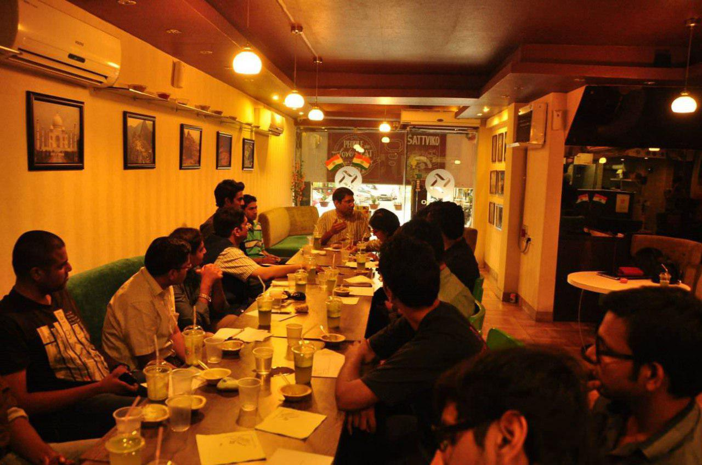
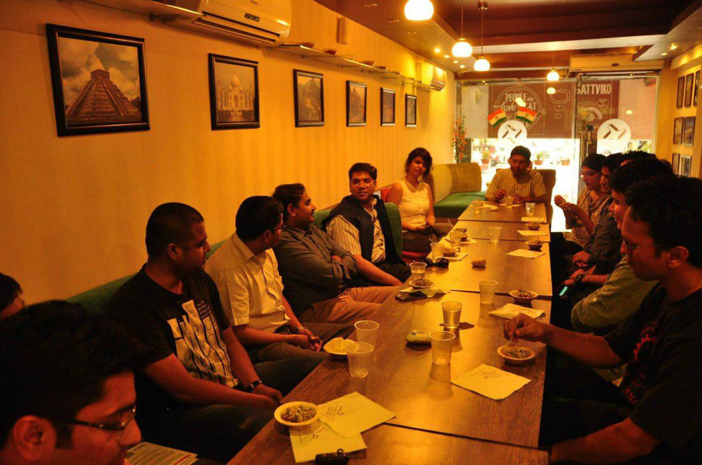
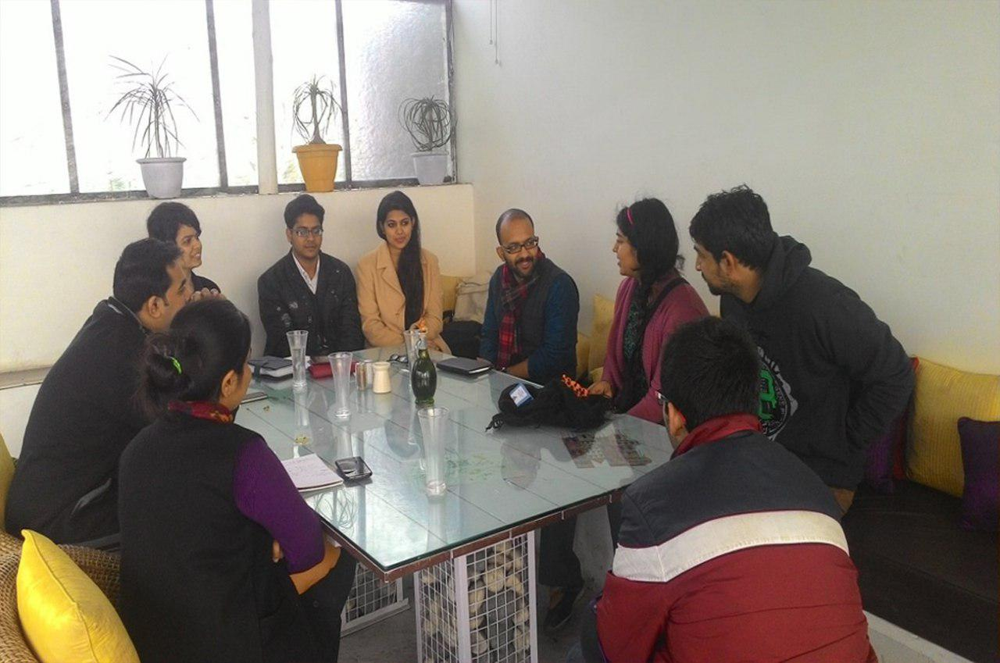
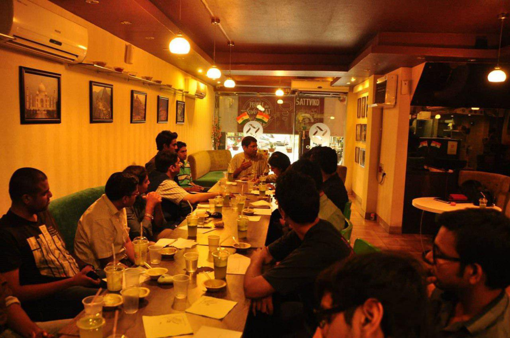
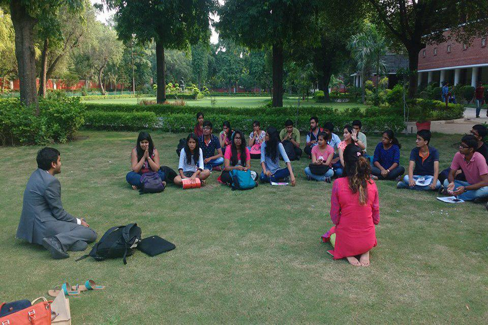
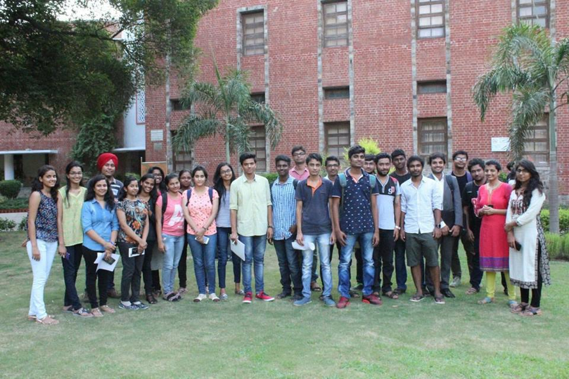
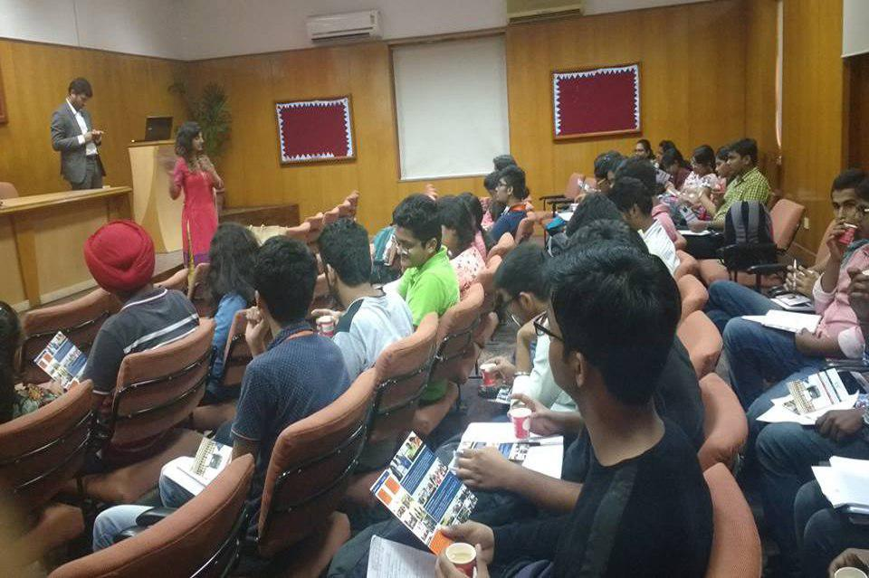
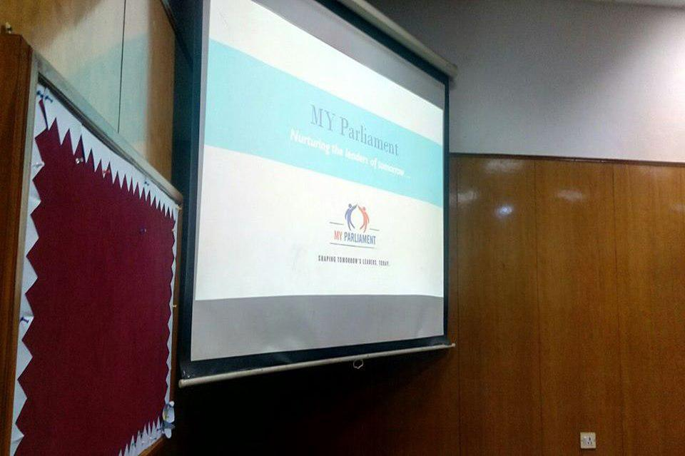

COFFEE MEETUPS
We at MY Parliament believe that active citizenship is a way of life, and not just a subject. We started conducting Coffee Meet ups with the idea of opening space for dialogue and discussions around public policy issues, and reaching to roots of democracy.
MY Coffee Meet is a series of interactive sessions between MY Parliament Team members, NGO partners, eminent dignitaries & interested individuals to meet like minded people and reflect about their role as active citizens.
Anyone and everyone can be a part of the Coffee Meet.
MY Coffee Meet is a series of interactive sessions between MY Parliament Team members, NGO partners, eminent dignitaries & interested individuals to meet like minded people and reflect about their role as active citizens.
Anyone and everyone can be a part of the Coffee Meet.
- Margaret Mead
 








